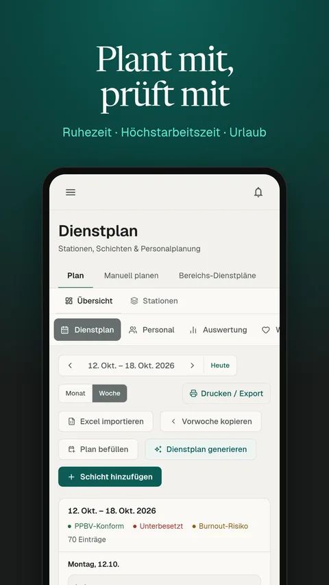
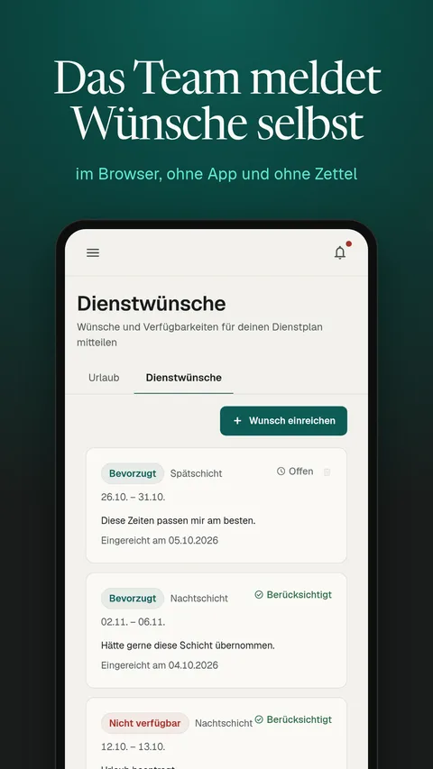

Nurvo Community Edition · Quellcode offen
Dienstplan Open Source für Arztpraxen und MVZ
Dienstplan Open Source von Nurvo läuft kostenlos auf Ihrem eigenen Server. Sie planen die Dienste Ihrer Praxis im Browser, und Ruhezeit, Höchstarbeitszeit und Urlaub werden schon beim Planen geprüft. Nurvo sieht Ihre Daten nicht, die Software ruft keinen Nurvo-Server auf.
ZIP, rund 4 MB, mit allen Anleitungen als PDF. Ohne GitHub-Konto. Überblick auch auf nurvo.de/dienstplan-open-source.


Was die Community Edition kann
- Dienstplan mit Regelprüfung. Verletzt eine Schicht die Ruhezeit, überschreitet sie die Höchstarbeitszeit oder fällt sie in einen Urlaub, sehen Sie das beim Planen.
- Mitarbeitende, Urlaub und Dienstwünsche verwalten Sie in derselben Anwendung wie den Plan.
- Mitarbeiter-Ansicht im Browser. Ihr Team sieht seine Dienste auf dem Handy und reicht Wünsche und Verfügbarkeiten ein, ohne eine App zu installieren.
- Zeiterfassung ist enthalten.
- Ihre eigene Adresse. Das Team meldet sich zum Beispiel unter
dienstplan.ihre-praxis.dean, verlinkt von Ihrer Praxis-Website.
So kommt der Dienstplan auf Ihren Server
Beide Wege brauchen keinen Nurvo-Server und keinen Lizenzschlüssel.
Ohne eigenen Server: Supabase und Vercel
Die Datenbank liegt in Ihrem Konto bei Supabase, Region Frankfurt, die Web-App in Ihrem Konto bei Vercel. Sie spielen die Datei supabase/schema.sql im SQL-Editor ein und tragen die Schlüssel Ihrer Datenbank an einer einzigen Stelle ein, in den Umgebungsvariablen bei Vercel. Schritt für Schritt: Anleitung als PDF.
Eigener Server mit Docker
Für Praxen mit eigenem Linux-Server oder IT-Dienstleister: App und Supabase-Stack laufen in Docker nebeneinander, und die Daten verlassen Ihr Netz nicht. Anleitung im Repository.
Wer sich beim Einrichten von einer KI helfen lässt, gibt ihr den Ordner fuer-ki/ aus dem Download. Den geheimen Schlüssel service_role geben Sie ihr nicht.
Community Edition oder gehostetes Nurvo?
| Funktion | Community Edition | Gehostet bei Nurvo |
|---|---|---|
| Dienstplan mit Regelprüfung | ja | ja |
| Mitarbeitende, Urlaub, Wünsche | ja | ja |
| Mitarbeiter-Ansicht im Browser | ja | ja |
| Zeiterfassung | ja | ja |
| Native App, KI-Funktionen, Lohnabrechnung | nein | ja |
| Personalakte, Notfallplan | nein | ja |
| Betrieb, Updates, Backups | Sie selbst | Nurvo |
| Kosten | keine Lizenz, nur Ihr Betrieb | 5 € je Mitarbeiter und Monat, mindestens 39 € |
Die gehostete Version ist noch nicht gestartet. Preis und Warteliste stehen auf nurvo.de/preise, zum Start gibt es 30 Tage kostenlos. Was sie in der Praxis übernimmt, beschreibt die Seite Dienstplan für die Arztpraxis.
Lizenz: kostenlos nutzen, nicht weiterverkaufen
Der Code steht unter der PolyForm Shield License 1.0.0. Sie dürfen die Software kostenlos nutzen, für Ihre Praxis anpassen und weitergeben. Nicht erlaubt ist, sie oder eine veränderte Fassung als Produkt oder Dienst anzubieten, der mit Nurvo konkurriert, auch nicht kostenlos. Der Quellcode ist offen, eine Open-Source-Lizenz im Sinne der Open Source Initiative ist das aber nicht. Name und Logo von Nurvo sind von der Lizenz nicht umfasst.
Die Regelprüfung ist eine Hilfe und ersetzt keine Rechtsberatung. Wer die Software betreibt, ist für Datenschutz, Backups und Updates selbst verantwortlich. Sicherheitslücken melden Sie vertraulich nach der Sicherheitsrichtlinie.
Häufige Fragen
Was kostet der Open-Source-Dienstplan?
Die Software kostet nichts, auch keinen Lizenzschlüssel. Kosten entstehen für den Betrieb: ein eigener Server oder Konten bei Supabase und Vercel, je nach Weg. Updates und Backups übernehmen Sie oder Ihr IT-Dienstleister.
Darf ich die Software für meine Praxis ändern?
Ja. Sie dürfen den Code anpassen und die geänderte Fassung in Ihrer Praxis einsetzen. Verkaufen oder anderen als Dienst anbieten dürfen Sie die Software nicht, auch nicht verändert. Die genauen Bedingungen stehen in der Lizenz.
Sieht Nurvo die Daten meiner Praxis?
Nein. Die Community Edition spricht nur mit Ihrer eigenen Datenbank. Sie ruft keinen Nurvo-Server auf und schickt keine Daten an Nurvo.
Gibt es eine App fürs Handy?
Das Team öffnet die Mitarbeiter-Ansicht im Browser des Handys, ohne etwas zu installieren. Die native App gehört zur gehosteten Version von Nurvo.
Wer hat den Dienstplan entwickelt?
Lilian Philipp Schiffer, technischer Mitgründer von Nurvo, hat rund 80 Prozent der Commits geschrieben. Mitgründer sind Jonas Suthold und David. Nurvo ist in Gründung und betreibt die gehostete Version unter nurvo.de.
Lieber erst vergleichen? Welche kostenlosen Wege es für den Dienstplan einer Praxis gibt, von der Excel-Vorlage bis zum Online-Planer, steht auf der Seite Dienstplan Software kostenlos.